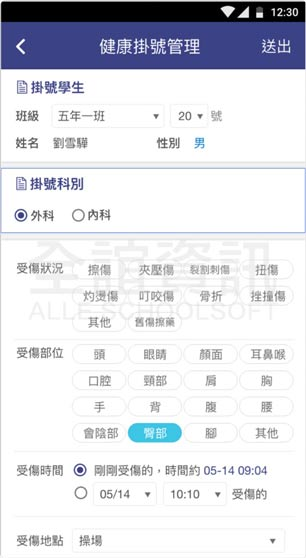
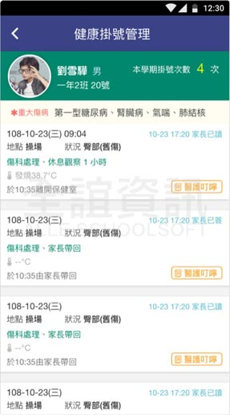

<div class="APP_application_list_class">
  <div class="APP_application_list_title">
    <span class="APP_application_list_title_left">
      <h4>健康掛號</h4>  
    </span>
    <span class="APP_application_list_title_right">
      <span class="APP_list_user APP_user_orange">
        學生
      </span>
      <span class="APP_list_user APP_user_green">
        老師
      </span>
      <span class="APP_list_user APP_user_red">
        家長
      </span>
    </span>
    <div class="clear"></div>
  </div>

  <div class="APP_application_list_words">
    提供保健室校護使用的掛號系統，學生掛號並填寫詳細受傷原因，提供校護快速了解原因，處理後回報傷病情形並發布推播通知給導師、家長。
  </div>

  <div class="APP_application_list_pic">
    <span class="APP_list_pic_margin">
      
    </span>
    <span class="APP_list_pic_margin">
      
    </span>
<!--     <span class="APP_list_pic_margin">
      
    </span> -->
  </div>
</div>
